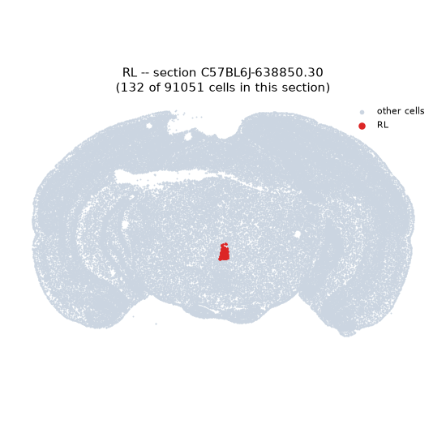
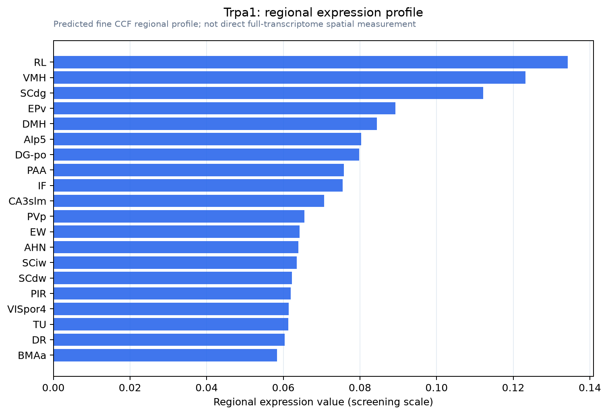

Trpa1
Transient receptor potential cation channel subfamily A member 1 (Ankyrin-like with transmembrane domains protein 1) (Wasabi receptor)
Spatial tier: REGION_BIASED · Class: ION_CHANNEL · Top region: RL (Rostral linear nucleus raphe) · Positive regions: 31/554
45.6Discovery Score
33.7Targetability Score
CEvidence grade C
What this means: Trpa1: fine CCF profile is region-biased toward RL (top regions: RL, VMH, SCdg, EPv, DMH); this is a discovery lead, not direct proof.
Direct spatial evidence
MERFISH REGION LOCATOR

Regional expression figure

Predicted WMB × fine-CCF profile; not direct full-transcriptome spatial measurement.
Spatial profile
Evidence and specificity
- Evidence status
- PREDICTED_FINE
- Direct sources
- None; predicted localization only
- Exclusive threshold
- 12 positive regions out of 554
- Spatial specificity
- 0.305
- Top-region fraction
- 0.049
- Filter status
- PASS
Interpretation limits
- Cell-type-to-region projection is imputed expression, not direct spatial measurement.
- Adult reference atlases do not establish stability across age, sex, strain, state, or disease.
- Transcript abundance does not guarantee protein abundance or genetic-tool performance.